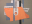
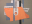
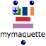
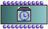
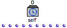
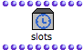
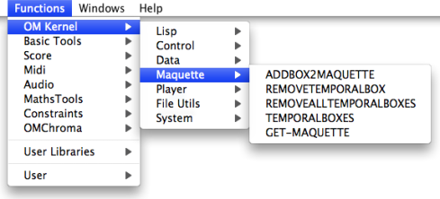

OpenMusic DocumentationHiérarchie de section : OM 6.6 User Manual > Maquettes > Maquettes in Patches > Reference Mode
OpenMusic DocumentationHiérarchie de section : OM 6.6 User Manual > Maquettes > Maquettes in Patches > Reference Mode
Navigation : page précédente | page suivante
Attention, votre navigateur ne supporte pas le javascript ou celui-ci à été désactivé. Certaines fonctionnalités de ce guide sont restreintes.
Reference Mode
Use
 |
The "reference" mode can be used simultaneously with both "build" and "functional" modes. Objects in a maquette on "reference" mode can be :
|
Procedure
To set a maquette on "reference" mode in a patch, select it, press b and click three times on the  label to display the reference label.
label to display the reference label.
Permanent Modifications
Any operation performed on a maquette on "reference" mode will modify the master object permanently.
Frequently Used Commands
The manipulation of TemporalBoxes from the outside of the maquette requires the frequent use of a number of items :
- TemporalBoxes instances
- TemporalBox slots boxes,
- self input boxes.
Here is a resume of the commands allowing to create these items.
Object |
Command |
|
|---|---|---|
TemporalBox instance |
 |
|
Self Input box |
 |
|
slots box |
 |
|
Connate Functions
A number of function allow to add, access, manipulate or delete TemporalBoxes in a maquette on "reference" mode from a patch. These functions can be accessed via the Functions / OM Kernel / Maquette menu.

Références :
Plan :
Navigation : page précédente | page suivante
A propos...(c) Ircam - Centre Pompidou